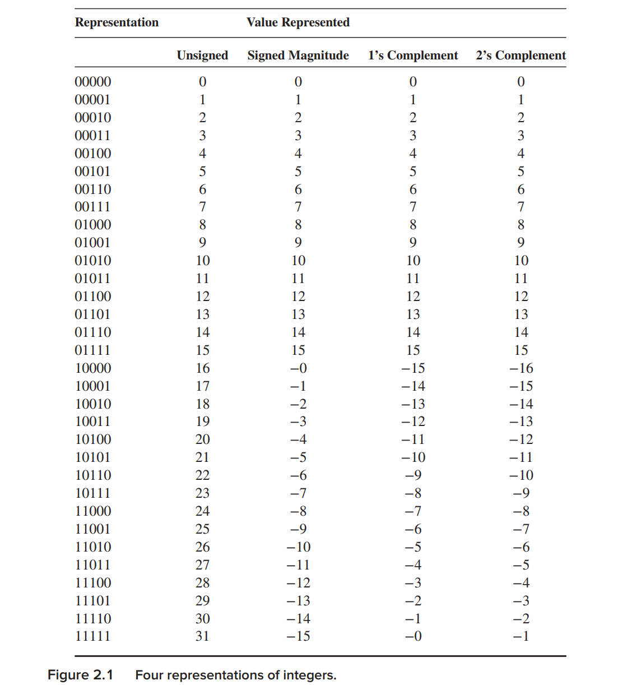
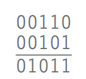
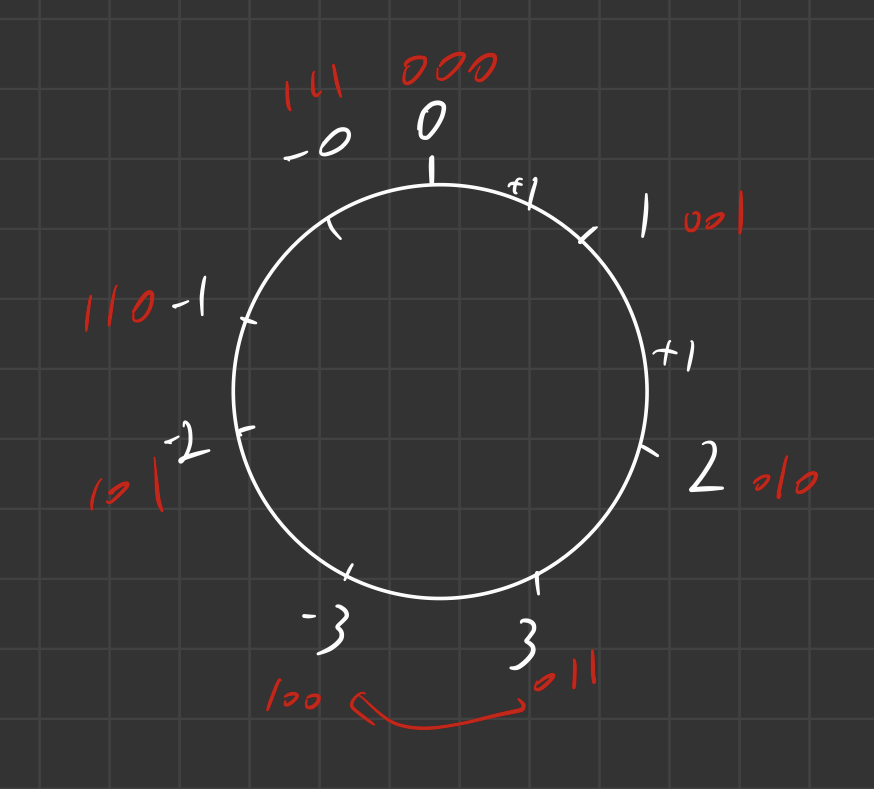
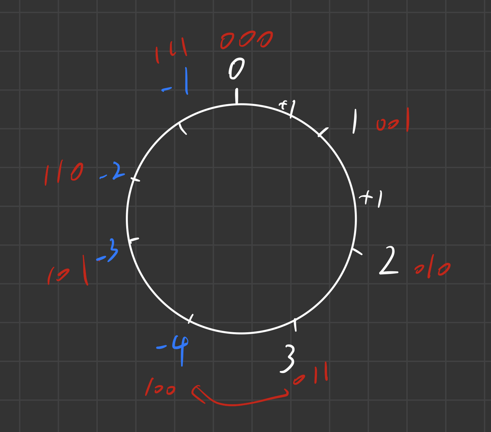
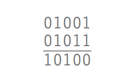

理清计算机中的数据表达方式（1）--整数
Bits
bits是信息的基本单元，计算机通过电压的高低来确定是0还是1；这里的电压是有一定范围的，0~a视为0，
a~b视为1，具体数字不用记
Data Types
同一个数字有不同的表达方式。当我们定义了一些数据的表示方法，同时定义了数据之间的操作之后，就是定义了 数据类型。
Unsigned Intergers
没什么可说的，就是无符号二进制数和十进制数之间的转换，很容易
Signed Integers
用五位二进制数举例子。\(2^5=32\)，就是说用五位二进制数我们可以表示32个十进制数。考虑到符号的问题，我们可以考虑正数和负数对半开，+1 to +15, and -1 to -15。这样一来还剩下2个位置，我们可以选一个，比如00000来表示0这样我们就表示了-15到15的所有数。
接下来需要考虑的是，如何建立五位二进制数和十进制数之间的一一对应。
由于有k位，我们就用一半的二进制位来表示0到\(2^{k-1}-1\)的正数，最之间的方法就是用这些正数转换为二进制数之后其本身的值来表示，只需要把最高位留空（置为0）即可。所有正数的最高位都是0，最大的正数就是+15---——>01111
那么，自然而然的，我们会想到直接把最高位的0换成1，不就可以表示负数了吗？这种方法叫做\(signed-magnitude\),
另一种方法，就是把已经表示出来的正数按位取反。比如：+5是00101，-5就是11010。这种方式叫做\(1's complement\)
上述两种方式都不是正真在今天的计算机上使用的，因为在工程实际中，对于这样表示的数据，要实现运算必须设计一些不必要的繁杂电路。实际上，今天我们使用的方法是\(2's complemeny\)

2's Complement Integers
从图2.1表中可以看到，2‘s complement表示的范围是-16到15
正数和之前两种方法一样，没啥区别。
就像我们之前说的，负数表示的选择是基于让逻辑电路更加简单的愿望。几乎所有的计算机都使用相同的机制做加法，叫做\(arithmetic\) \(and\) \(logict\) \(unit\),也称ALU。
现在需要知道的是ALU有2个输入和1个输出，直接进行二进制的加法，如图：

ALU一点也不关心它操作的是什么数，它只是机械的执行这个相加的操作。因此，最好让我们在十进制整数和二进制数之间建立的这种映射关系能对ALU的加法操作封闭。具体的说，就是我们要保证\(A+(-A)=0\)。因此我们需要仔细挑出负数的表示方式。实际上要实现这个，本质上要求：
represent（A）+ represent（1）= represent（A+1）
但是注意，由于我们的位数是有限的（比如前面的例子里都是五位二进制数），所以+1的操作不能让数无限大的增长。因为位数始终是有限的，所以最终的效果是整个实现一个取模运算。为了便于理解，我觉得可以把它想象成一个环。下面我以三位二进制数的1‘s complement integers为例，演示一下这个周期性过程。

显然，这个环上不能实现二进制加一等同于其代表的十进制数加一， 这是因为出现了-0和0。我们能想到的最简单的方法就是，给负数按位取反之后整个加1，想当于将负数域向前挪一个格子，变成下面的样子：

如此一来，显然我们得到的就是一个连续的环。在这种表示下，就能实现很方便的加法运算了。
2’s complement integers的表示很好推，当我们拿到一个A后（不论是真是负），只需要按位取反再加1，就能得到-A。
Extending Conversion to Numbers with Fractional Parts
如果我们想用二进制数表示小数部分，又该怎么考虑？
Binary to decimal
比较简单，和十进制是一样的，从小数点后第一位起一次是2的-1、-2、-3次方
如.1011，我们的计算是：
\[2^{-1}+2^{-3}+2^{-4}=0.5+0.125+0.0625=0.6875\]
Decimal to binary
推导部分用手写了：

因此，如果用4位二进制表示0.421的小数部分的话，可以表示为.0110
Addition and Subtraction
加法直接算v
减法只需要给那个数取反加1后，再进行加法
Sign-Extension
有时候为了计算时有相等的位数，必须给前面补充位数。这里的要求是，如果是正数，前面全部补0不影响数的大小；如果是负数，前面全部补1不影响数的大小
Overflow
目前为止我们讨论的都是两个整数的和比较小的情况，以至于结果一定在可用位数能够表示的范围内。那如果超出范围了怎么办？
老式的那种仪表，比如一些汽车的里程表：可能显示的是99992，过了一会跳到00092了。这就是位数受限带来的麻烦，这时候我们就说里程表overflowed了。在计算机里面也会有这种情况。我们之前一直讨论的五位二进制数，如果用2’s complement的方法表示，其范围是-16到15。现在我们进行+9和+11的加法，

得到的答案是-12。出现这种错误的原因是数值太大而导致了符号位上的进位。负数相加也有相同的问题。但是注意：正数和负数相加永远不会出现这种问题